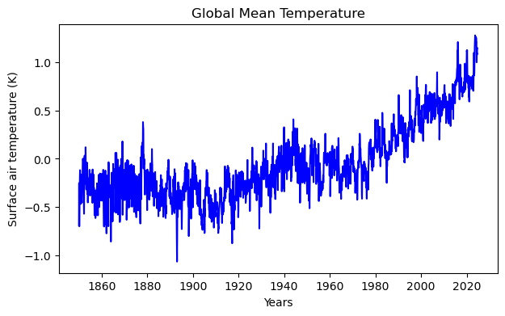
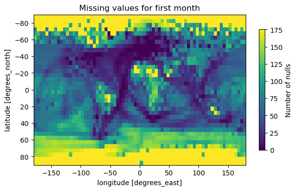
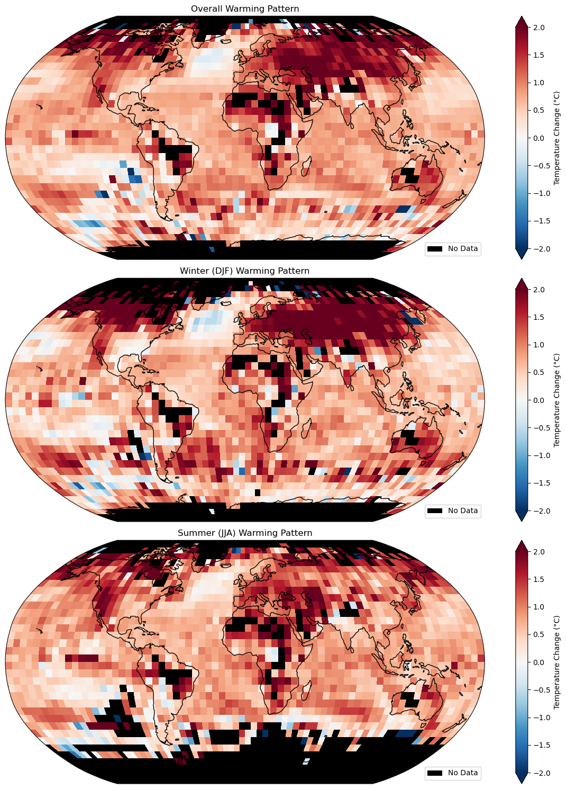

Project Summary
Assessment_2_finalProof (Score: 76 / 95)
I processed multi-decade NOₓ/NHₓ deposition model outputs, conducted exploratory data analysis, and adapted existing Python scripts to craft publication-quality figures.
Key Figure
This anomaly plot shows balanced long-term variations across Yakushima Island, Fiordland National Park, and Taynish National Nature Reserve, with notable seasonal and extreme outliers that I investigated further.
Null-Value Distribution
I mapped the count of missing data across all model grid cells to identify regions where data cleaning was most critical. Areas with higher null counts guided my gap-filling strategy.
Global Warming Pattern
This latitude-weighted time series highlights a clear upward trend in global temperature anomalies from 1960 to 2020, underscoring the acceleration of warming—especially at high latitudes.